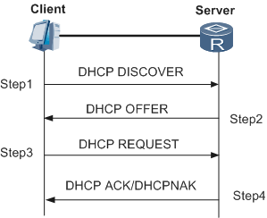
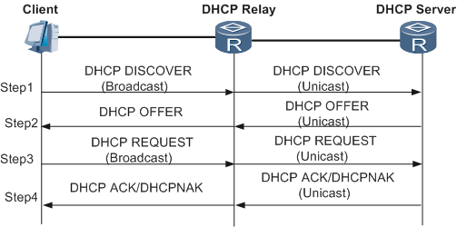
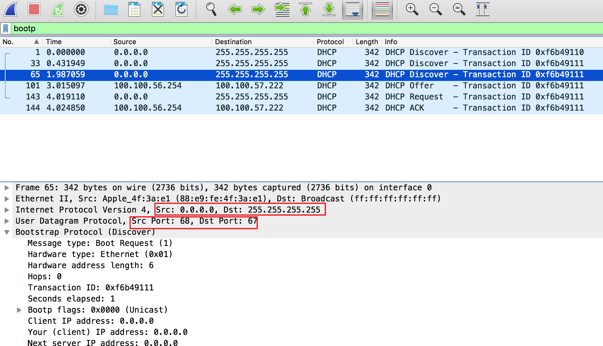
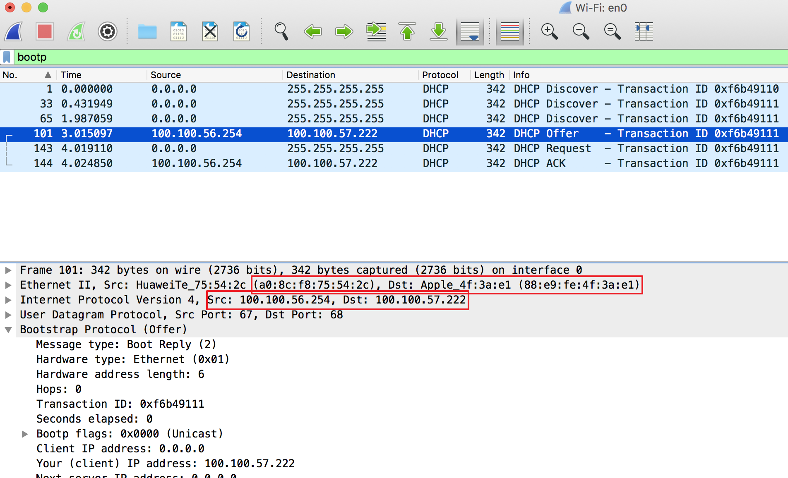
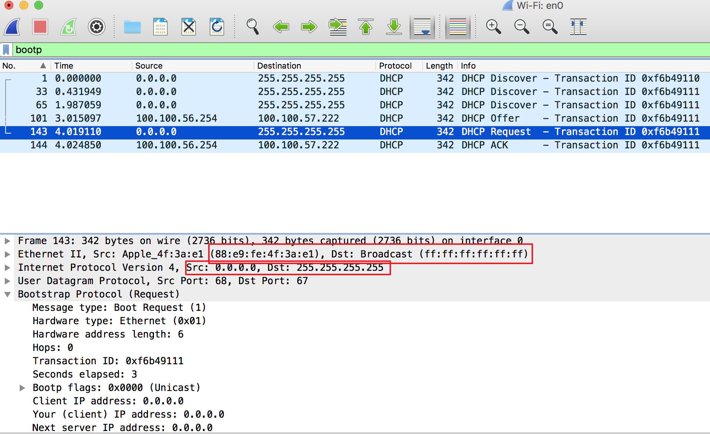
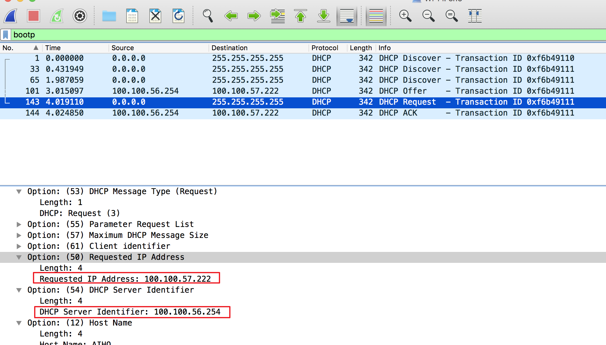
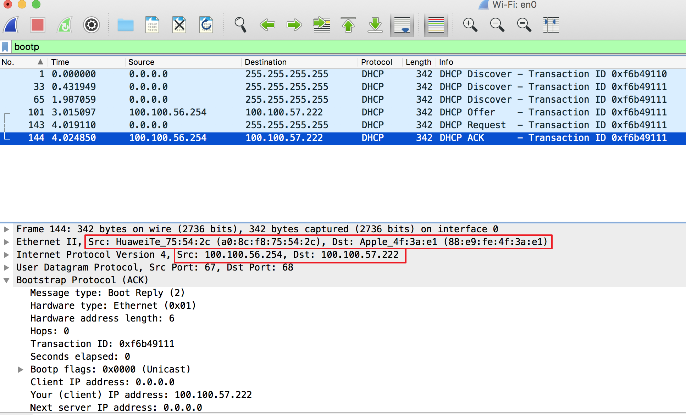
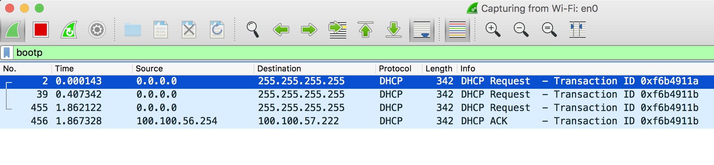
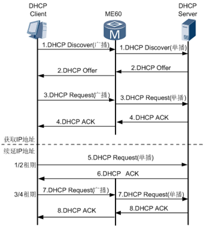

DHCP原理
DHCP，DNS和HTTP是3种常见的高层协议。
DHCP(Dynamic Host Configuration Protocol),动态主机配置协议，是一个应用层协议。当我们将客户主机ip地址设置为动态获取方式时，DHCP服务器就会根据DHCP协议给客户端分配IP，使得客户机能够利用这个IP上网。
首先client要设置为DHCP获取, server常见就是路由器咯
DHCP的前身是BOOTP协议（Bootstrap Protocol）,BOOTP被创建出来为连接到网络中的设备自动分配地址，后来被DHCP取代了，DHCP比BOOTP更加复杂，功能更强大。后面可以看到，在用Wireshark过滤显示DHCP包，需要输入过滤条件BOOTP，而不是DHCP.

DHCP的实现分为4步，分别是：
第一步：Client端在局域网内发起一个DHCP Discover包，目的是想发现能够给它提供IP的DHCP Server。
第二步：可用的DHCP Server接收到Discover包之后，通过发送DHCP Offer包给予Client端应答，意在告诉Client端它可以提供IP地址。
第三步：Client端接收到Offer包之后，发送DHCP Request包请求分配IP。
第四步：DHCP Server发送ACK数据包，确认信息。
加了DHCP relay

wireshark抓包
具体看包再分析下每步

一、发现阶段：客户机寻找DHCP服务器
截图分析：
- 客户端不知道自己的IP，以
0.0.0.0标识，此时不知道DHCP服务器的IP地址，以255.255.255.255广播地址标识；MAC地址暂时不管. - 其他主机接收到此包，直接丢弃；DHCP服务器搜到后会响应此包，（注可以被多台DHCP服务器接收,所以才有DHCP Request）
- 客户机端口为68，DHCP端口为67，为默认端口号；

二、提供阶段：DHCP服务器提供IP地址
此包从DHCP服务器到客户端路上，客户机并暂时还没有
100.100.57.222的IP地址；DHCP服务器优先基于
ARP协议与之通信(单播返回)，如果失败，直接提供广播方式发送；

三、请求阶段：客户机请求DHCP服务器之一确认提供的IP地址
若多台DHCP服务器为其提供Offer信息，则客户机只接收第一台DHCP服务器的IP地址，那么第一台DHCP服务器如何知道自己提供的IP地址被接收？其他DHCP服务器如何知道自己提供的IP地址没有被接收呢？(所以要告诉所有的)
客户机虽然接收到分配的IP地址，但是没有与DHCP服务端进行确认，并不能开始使用；
这是一个与图1相同的广播形式
request的数据包，目的在于与第一个DHCP服务器进行确认，与其他DHCP服务器进行通信，告知其分配的IP地址并未采用，这是如何实现的呢？截图分析：

- 图3的数据包，相应网络范围内的DHCP服务器均会收到，每台DHCP服务器检查
DHCP Sever Identifier字段，如果是本机IP，则确认其分配的即Requested IP Address有效；如果不是本机IP，则其分配的IP地址则无效；

四、确认阶段：DHCP服务器确认IP字段有效
仅图4中确认IP地址有效的DHCP服务器，返回Ack数据包；
此数据包包含在本文开头时强调的上网的基本信息，实现动态上网；
故事到这里是否就可以圆满结束了呢？那动态主机配置如何体现其动态过程呢？看官切勿着急，工程师们热爱的是全面的系统，怎么会置之不理呢？

五、重新登录与更新租约
- 客户机重新启动后(或关闭WiFi再打开)，不再直接发送Discover信息，而是发送
Request信息；DHCP服务器会优先尝试，允许其继续使用IP地址，发送Ack数据包；如果该IP不能再使用，返回Nack数据包，客户机重新开始Discover阶段； - DHCP客户机启动时和IP租约期限过一半时，DHCP客户机都会自动向DHCP服务器发送更新其IP租约的信息，与1）中过程相同；
总结

DHCP协议简析就到这里啦，本次的内容简单实用，重点在于Request阶段的那个具备广播属性的数据包，作用有二，其一是与第一个DHCP服务器确认其IP地址的有效性，其二是与其他DHCP服务器说明其IP地址并未被采用。